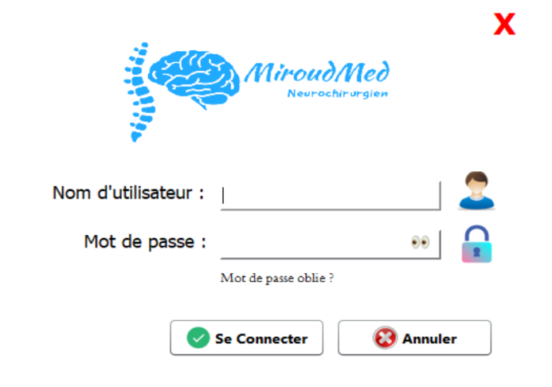

Desktop Interface
A Java-based desktop application interface.
Healthcare · Desktop Software
A desktop application developed for organizing medical images and related information in the context of a neurosurgery clinic.

Medical Imaging Management — Main interface
01 — Highlights
A Java-based desktop application interface.
MySQL used to organize and manage application data.
Designed in the context of a neurosurgery clinic.
02 — Links
03 — The Problem
Medical environments may involve different types of information that need to be organized and retrieved efficiently. A desktop application supported by a database can provide a structured environment for managing these records.
This project addresses that context through a Java application developed for medical imaging management in a neurosurgery clinic.
04 — Requirements
05 — My Role
My work focused on developing the Java desktop application and connecting it to a MySQL database. The project involved organizing the interface and the data management layer within the development environment.
06 — Technical Challenges
07 — Architecture & Choices
Java Desktop Interface
|
v
Application Logic
|
v
MySQL Database
08 — Implementation Approach
09 — Results
The project resulted in a Java desktop application connected to MySQL and designed around medical imaging information management in a neurosurgery clinic context.
10 — Lessons Learned
11 — Interface